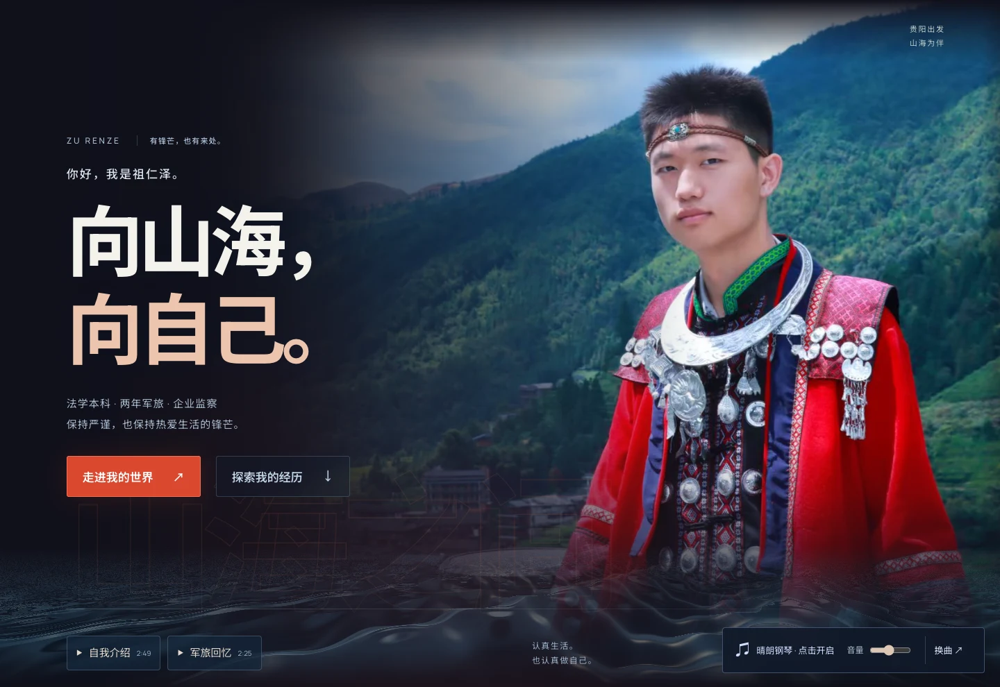
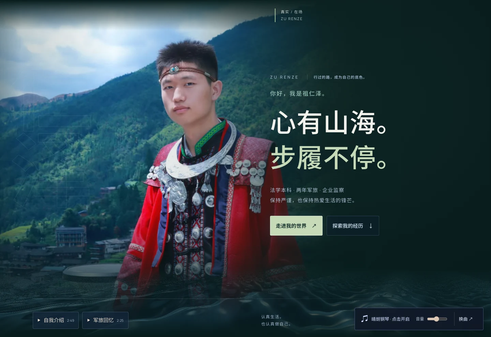
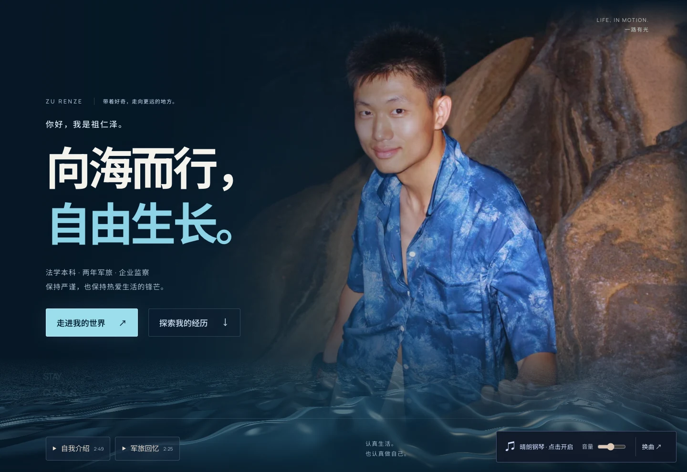

更有冲击力。 放大红衣原照，让红、深蓝与暖白形成对比。大字与人物各占一侧，前景海浪把画面延伸进页面。
体验入场与海浪 ↗VISUAL DIRECTIONS / 03
保留原照片里的你，重新安排人物、光影与环境。
点开任何一版，看它在完整网页里的样子。
三版供选择，当前默认海报暂时保留。

更有冲击力。 放大红衣原照，让红、深蓝与暖白形成对比。大字与人物各占一侧，前景海浪把画面延伸进页面。
体验入场与海浪 ↗
更成熟，也更有电影感。 人物放在左侧，名字作背景轮廓。玄青环境和留白衬托红衣，视线顺势落到右侧的标题与入口。
体验入场与海浪 ↗
更松弛，人与环境也更连贯。 采用海边蓝衬衫原照，让真实岩石、海浪和蓝色衣服形成呼应，保留原照的目光与皮肤质感。
体验入场与海浪 ↗